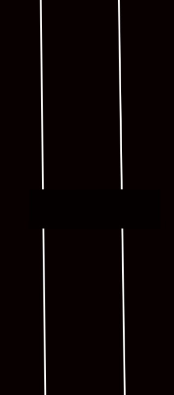
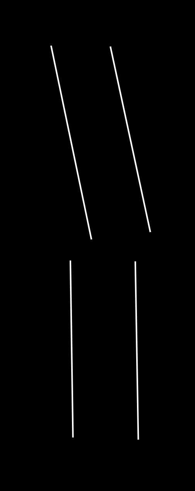
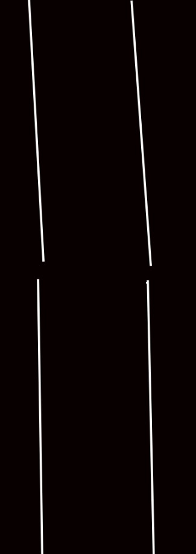
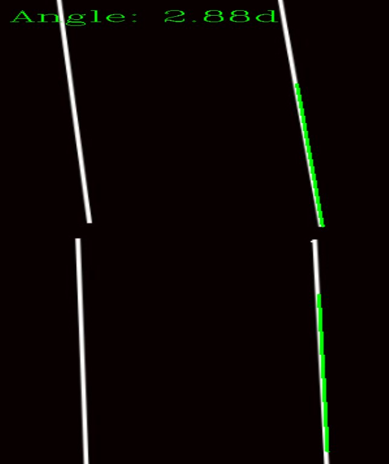

Obviously I can't show you real data from the lab, so here's
a very-anatomically-accurate drawing of a bone cross-section.
Now let's break it.
Under some research settings, this broken bone would ideally heal in a way so that it returns to its original shape. But sometimes this doesn't happen, and it looks like

Great, now the sample has deviated too much from ideal. Time to throw the sample away. Would you throw away the sample below?

Some might say to throw it away, some might not. This is certainly a problem. Objectivity should be a big no-no in research. So, I decided to find an exact "measure of breakage".
With my own edge detection code that I taylored specifically for the real sample images, my code could find the bone edge and find the angle of breakage.

This is my algorithm running on the previous totally-accurate bone representation. The green marks where my edge detection found the bone, and an angle of 2.88 degrees of breakage was found. Once a threshold for an acceptable degree of breakage is established, this process will be entirely objective. This elimates the possiblity of a invalid sample making it into the final data analysis or a valid sample being thrown away, which will drastially improve the quality of the data produced.
I am currently leading a small team to develop this into a usable app. We are currently using Flask and ReactJS.